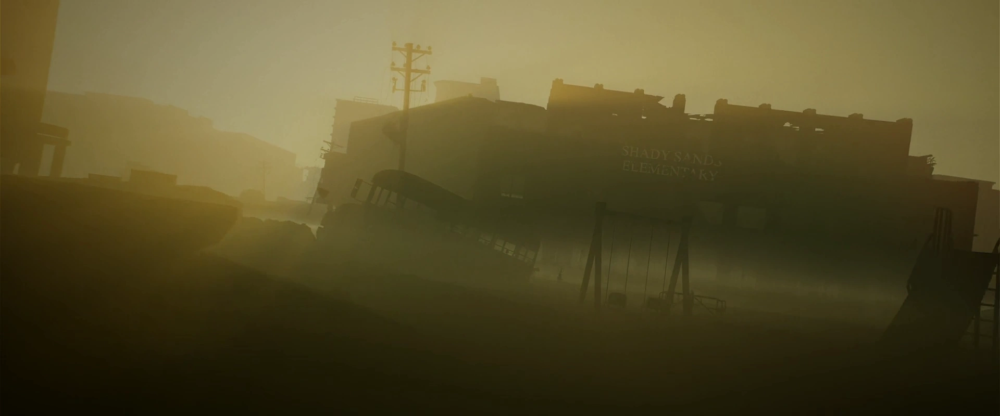

シェイディ・サンズ小学校
TVシリーズ ロケーション
LOCATION DATA

Shady Sands Elementary School is a building in Shady Sands, appearing briefly {{in|FOTV}}.
Background
A four-story building in downtown Shady Sands, down the street from the civic center, the school educated the youngest minds of the Republic's capital. Laid out like classic pre-War schools, with lockers belonging to students lining the walls and filled with their books and other items, the school also had a separate playground out the front door for the youngest. On top of being served by the capital's mass transit system, it also had a working school bus.Appearances
Shady Sands Elementary School appears {{In|FOTV}} episodes "The Past".Gallery
References
{{References}}Category:Fallout TV series locations Category:Shady Sands
de:Grundschule Shady Sands
Impression
（準備中）
（準備中）